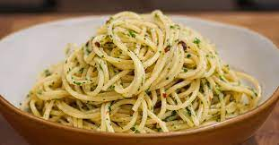

Pasta Aglio e Olio

This is a traditional Italian pasta dish from Naples. It’s made with spaghetti, fresh garlic, red pepper flakes, and extra-virgin olive oil.
It’s simple yet flavorful, and it’s often enjoyed as a quick, economical meal.
Ingredients:
- Spaghetti
- 4 cloves of garlic
- Olive oil
- Red pepper flakes
- Parsley
- Salt
Steps:
- Cook the spaghetti in salted boiling water until al dente.
- Meanwhile, heat olive oil in a pan and sauté thinly sliced garlic until lightly golden.
- Add red pepper flakes to the pan and turn off the heat.
- Drain the pasta, reserving some pasta water.
- Toss the pasta in the garlic oil, adding pasta water if needed.
- Garnish with chopped parsley and serve.
back